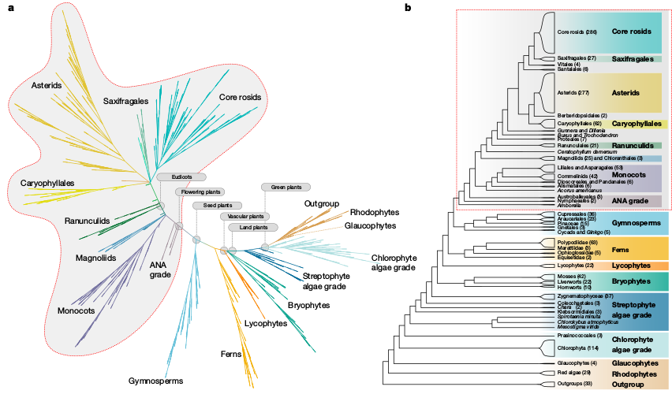
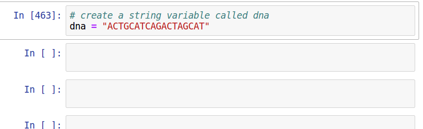

Bioinformatics Boot Camp for Ecology and Evolution
CUNY City Tech
Aug. 5, 2020
Phylogenomic sampling
Characterize evolutionary history from a subset of sampled genomes (individuals).




Phylogenomic sampling
Characterize whole genomes from a subset of sequenced markers.

Genealogical variation
It is important to examine evolutionary history across the entire genome.

Historical introgression/admixture
It is important to examine evolutionary history across the entire genome.

The Coalescent
A model that describes the expected waiting time until two or more
samples share a most recent common ancestor. The distribution of
coalescent times within a population, or between populations, provides information about their history.
There are many genealogical histories that could possibly explain the genetic relatedness of a set of samples. We cannot observe the genalogies directly, only the sequence data that evolved on those genealogies.
Coalescent simulations provide a means to ask: "can the genetic variation that I observe in my samples be explained by neutral evolutionary processes?"
Population parameters (Ne)
The effective population size (Ne) of a population describes the probability that two samples share a common ancestor in the previous generation. This parameter does not translate directly to the actual population size, though they are likely correlated. Other factors like non-random mating and population structure also affect Ne.
Single population model
If we assume that a population is randomly mating (panmictic) and neutrally evolving then the expected waiting time until n samples coalesce can be modeled entirely by Ne.
Because n samples can share many possible genealogical histories (remember how big tree space is), and their genealogical relationships are expected to vary across their genomes (recombination makes different regions independent of others), we expect to observe a large variation in genealogical histories when examining many loci for n samples.
The coalescent model treats genealogies as a random varaible. We are interested in the expected distribution of variation when integrating over many genealogies.
Multiple population (structured) coalescent
When modeling multiple populations a "species tree" topology (e.g., "Species Tree") defines when different samples or their ancestors are able to share a parent in a previous generation.
To predict the expected genetic similarity of samples in a structured coalescent model requires estimating Ne for each lineage as well as T, the divergence time of the populations.
Modern phylogenetic inference methods are based on the multispecies coalescent model which calculates the likelihood of observed genetic data given a set of parameters: Ne, T, and a topology. Searching over many topologies and many parameters can identify a best species tree model that explains variation among genealogies.
Python
Why Python, is it fast, is it easy to learn?
Python
Easy to use, easy to read, extendable (e.g., C++ binding), mature. Python is the glue that binds programs/code/web together.

Interactive Modern Python (IPython)
Although it has been around for decades, Python has exploded in popularity in the last few years owing to its well developed data science libraries and interactive scripting tools. We will be learning modern interactive Python usage.

Introduction to bash/jupyter/the-cloud
Throughout this course will assign online computational notebooks to complete between sessions. These are called jupyter notebooks, which combine text and code together into a single document. They are a great tool for teaching and for doing science.